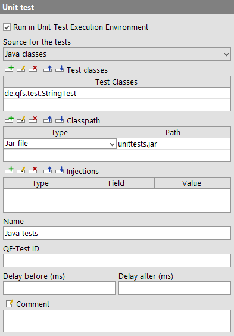
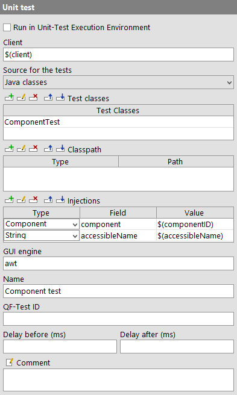
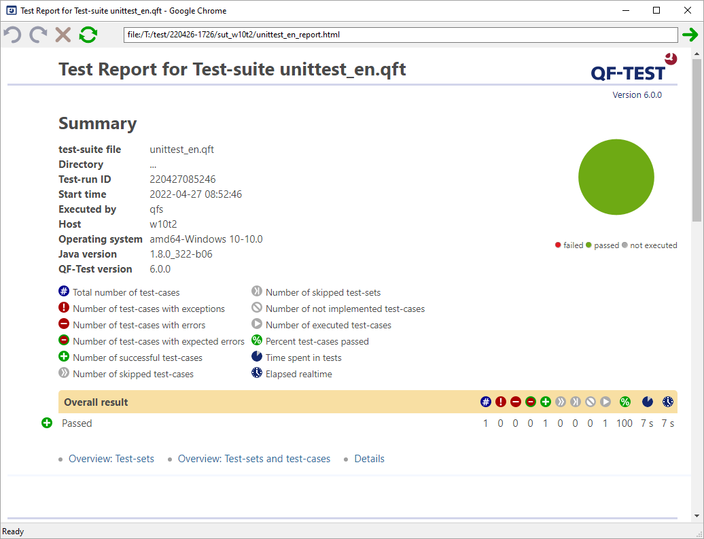

| Version 6.0.3 |
With Unit Tests, i.e. component tests, you can check the functional units. They explicitly test the functionality of single components. For this reason they are much less complex compared to integration and system tests.
The 'Unit test' node executes Unit Tests via the JUnit framework. The results are available in the run-log as well as in the report.
The tests can be started from two possible sources: Java classes containing the JUnit test-cases or Unit Tests scripted directly in QF-Test. The parameters of the node vary with the use case.
The JUnit 5 framework is used to execute the tests. This enables executing JUnit 5 Tests using the JUnit Jupiter engine as well as executing JUnit 4 and JUnit 3 tests using the JUnit Vintage engine. With JUnit 5 you can use features like parameterized tests, nested tests and test with a different display name.
It is possible to execute Unit Tests from Jar or Class files. It is also possible to execute Unit Tests that are available from the SUT's runtime. QF-Test executes the tests of the test classes specified in the respective attribute of the 'Unit test' node. In the report they will be displayed as test-steps within a test-case. The following example demonstrates the usage of a 'Unit test' node with Java test classes.
|
|  | ||
|
| Figure 12.1: Unit Test node with Java classes | ||
|
|
|
|||
|
| Example 12.1: Java Unit test | |||
The class de.qfs.test.StringTest must exist in the unittests.jar specified in the 'Classpath' attribute. The path is determined relative to the path of the directory of the current suite. In this example the jar file is in the same directory as the suite.
JUnit test classes are Java classes where the methods have the @Test annotation.
The 'Unit test' node executes all classes specified in the 'Test classes' table.
Thus a 'Unit test' node can execute several test classes.
The second option to execute Unit Tests is to script the Unit Test directly in the 'Unit test' node. You can use any of the Script languages QF-Test offers. The most appropriate one is Groovy because it supports the Java annotations. The JUnit framework is used to execute the scripts.
|
|
|
|||
|
| Example 12.2: Unit Test Script with Groovy | |||
In Groovy the required JUnit 4 classes are automatically imported at run-time.
Just like in Java all tests with the @Test annotation will be executed.
You can ignore expected exceptions using the expected parameter of the
@Test annotation.
The methods with the @BeforeClass annotation will be executed before
the test methods will be run.
|
|
|
|||
|
| Example 12.3: Unit Test script with Jython | |||
Because Jython does not support Java annotations, the tests run as JUnit 3 tests.
All methods beginning with the keyword test are considered to be a test and executed as QF-Test checks.
The methods must have the self parameter because they are automatically enclosed in a class.
The setUp method is executed at the beginning of each test.
|
|
|
|||
|
| Example 12.4: Unit Test Script with JavaScript | |||
Also JavaScript does not support Java annotations, the tests are executed as JUnit-3 Tests
(cf. subsection 12.2.2).
Just like in Jython all functions beginning with the keyword tests are executed as QF-Test checks.
It is possible to use the Unit Test node for the so called Live Tests. In this case the Unit Tests are executed in the running SUT. Using 'Injections' the Unit Tests inject QF-Test objects like WebDriver, components and variables into the Unit Tests or scripts directly.
|
|
|
|||
|
| Example 12.5: Java Unit-Test | |||
|
|  | ||
|
| Figure 12.2: Example Unit Test node with Injections | ||
The example shows the injection of two QF-Test objects: component and variable. The parameter "Field" corresponds
to the name of the field static JComponent component; in the Java class.
The java field must be static.
|
|
|
|||
|
| Example 12.6: Java Unit Test with WebDriver Injections | |||
|
|  |
||
|
| Figure 12.3: Example Unit Test node with Injections | ||
This example shows how to inject a WebDriver object into a Java class.
When no value for the WebDriver driver is specified QF-Test
determines the value via the given client.
The greatest benefit from using the 'Unit test' node is that the results are displayed nicely formatted in the HTML report. All Unit Test classes executed via this node are considered QF-Test test-cases. 'Unit test' nodes should not be run separately. In order to see them correctly displayed in the HTML report, run them as part of a Test-case. Each test method is handled like a QF-Test check, e.g. a failed check does not abort the tests execution.
|
|  | ||
|
| Figure 12.4: Unit Test Report | ||
| Last update: 9/6/2022 Copyright © 1999-2022 Quality First Software GmbH |